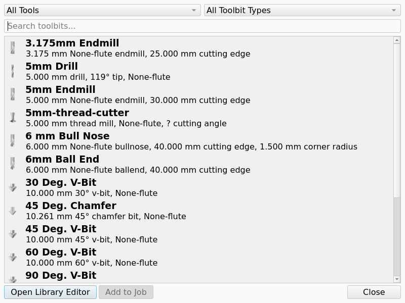
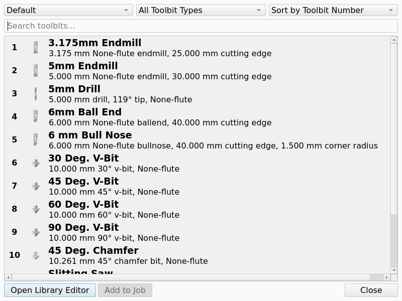

CAM ToolBitDock
Add Toolbit…
 Add Toolbit…
Add Toolbit…
 CAM ToolBitDock
CAM ToolBitDock
Tool Commands → Add Toolbit…
P + T
0.19
Toolbit Library Manager, Tool Library, Tool Bit, (dialog rewritten in 1.1)
Description
The Add Toolbit… command opens the Toolbit Selector, a dialog that shows the Tool Bits of a library and creates Tool Controllers in the active Job from the selected Tool Bits. Despite the command name it is a dialog, not a dock panel. introduced in 1.1: the Toolbit Selector replaced the earlier Tool Bit dock panel.
Double-clicking a Tool Bit creates one Tool Controller for it. Selecting several Tool Bits and pressing Add to Job creates one Tool Controller per selected Tool Bit. The Add to Job button is only enabled when a Tool Bit is selected and the document contains a Job.
The first row of the dialog holds the library drop-down (the last used library is preselected), the All Toolbit Types filter and the sort drop-down; below it is a search box. Each list entry shows the tool number in the selected library, the label, a one-line summary and the shape icon. The buttons at the bottom are Open Library Editor (opens the Library Manager), Add to Job and Close.
If the document contains no Job, the message Create a Job first is shown. If it contains several Jobs, a dialog asks which Job to add the Tool Controllers to. The new Tool Controller is named TC: <Tool Bit label>, gets the Tool Bit’s number in the selected library as Tool Number and the Tool Bit’s Spindle Direction.
The same Tool Bit browser is used by the Job editor (Tools tab → Add, dialog Select Toolbit, which additionally offers All Tools; Tool Bits taken from All Tools get the next free tool number of the Job) and by the Tool controller drop-down of an operation’s task panel, whose last entry opens the Toolbit Selector to create a new Tool Controller.
The Add Toolbit… command opens the Toolbit Selector dialog. The dialog shows the Tool Bits of a Tool Library. The dialog creates one Tool Controller (TC) in a Job for each Tool Bit that you select. The command requires a document that contains a Job.
Tool Library describes how the dialog adds a Tool Bit to a Job. Tool numbers describes how the CAM workbench sets the number of the new TC.
Usage
Create Tool Controllers
-
There are several ways to open the Toolbit Selector:
-
Press the
 Add Toolbit… button in the Tool Commands toolbar.
Add Toolbit… button in the Tool Commands toolbar. -
Select the option from the menu.
-
Use the keyboard shortcut: P then T.
-
-
Select a library in the drop-down.
-
Double-click a Tool Bit, or select one or more Tool Bits and press Add to Job.
-
Open the Toolbit Selector dialog with one of these controls:
-
Press the
Add Toolbit… button in the Tool Commands toolbar. -
Select .
-
Press P and then T.
-
-
Select a Tool Library in the library list, or select All Tools.
-
Select one or more Tool Bits in the list.
-
Press Add to Job. As an alternative, double-click one Tool Bit.
-
If the document contains more than one Job, select the Job in the dialog that opens.
-
If the Tool Number dialog opens, enter the number for the TC and press OK.
-
Press Close.
Options
The Toolbit Selector dialog has these controls above the Tool Bit list:
-
Library list: selects the Tool Library that the dialog shows. The dialog opens with the Tool Library that you used last.
-
introduced in 26.3 All Tools: the first entry of the library list. The entry shows each Tool Bit in the asset directory.
-
Type filter: shows only the Tool Bits of one shape type. Default:
All Toolbit Types. -
Sort list: sets the sequence of the Tool Bit list. The dialog hides this control when All Tools is selected.
-
Search box: shows only the Tool Bits that match the text.
The figure shows the dialog with All Tools selected.

Each row of the Tool Bit list shows these items:
-
The number of the Tool Bit in the selected Tool Library. A Tool Bit in the All Tools view has no number.
-
The label of the Tool Bit.
-
The summary of the Tool Bit, on one line.
-
The shape icon of the Tool Bit. The icon shows the Tool Bit artwork without the dimensions. See Tool Shape.
The figure shows the dialog with the Default Tool Library selected.

introduced in 26.3: The summary shows each length in the unit system of the Tool Bit.
A Metric length has 3 decimals, and an Imperial length has 4 decimals.
An example of a summary is 5.000 mm 4-flute endmill, 30.000 mm cutting edge.
The dialog has these buttons below the Tool Bit list:
-
Open Library Editor: opens the Library Manager dialog. See Toolbit Library Manager.
-
Add to Job: creates one TC for each selected Tool Bit. The button is available only when a Tool Bit is selected and the document contains a Job.
-
Close: closes the dialog.
Notes and limitations
-
The Toolbit Selector is a dialog. The Toolbit Selector is not a dock panel.
-
If the document contains no Job, the message Create a Job first appears.
-
The new TC has the label
TC:and the label of the Tool Bit. -
The new TC gets the Spindle Direction value of the Tool Bit.
-
The number of the Tool Bit in the Tool Library is only the proposal for the Tool Number property of the new TC.
-
Two TCs of a Job can have the same Tool Number only when they use the same Tool Bit.
introduced in 26.3: The Tool Number dialog asks for a number when the Tool Bit has no library number. The Tool Number dialog also asks for a number when a TC of a different Tool Bit has the library number. If you cancel the Tool Number dialog, the CAM workbench does not add this Tool Bit to the Job. See Tool numbers for the full rules. The figure shows the Tool Number dialog when a TC of a different Tool Bit has the library number.

introduced in 26.3: These controls open the same Toolbit Selector dialog:
-
Add on the Tools tab of the Job editor.
-
The last entry of the Tool controller list in the task panel of an Operation.
-
The command
CAM_ToolController. No menu and no toolbar contains this command.